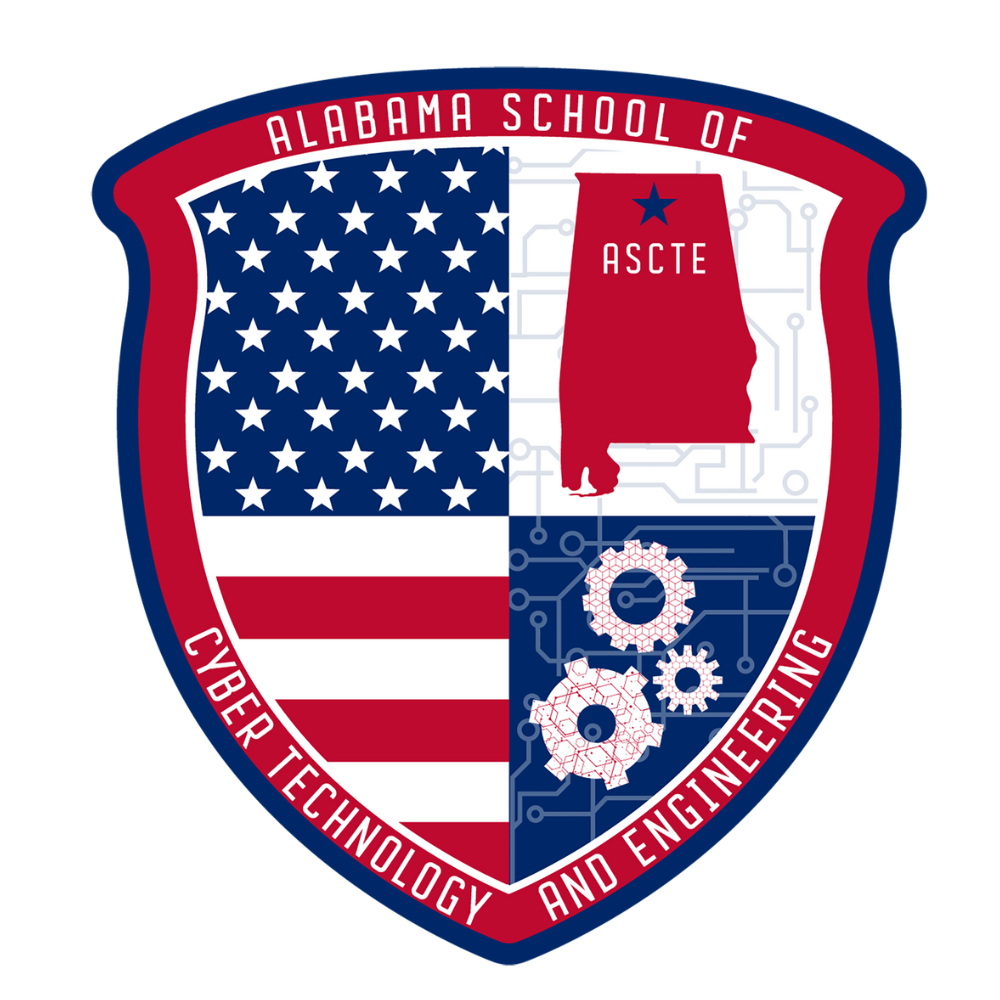

Your Name
Email: your.email@example.com
Phone: (555) 123-4567
GitHub: github.com/yourusername
LinkedIn: linkedin.com/in/yourusername
Education
Alabama School Of Cyber Technology and Engineering
Expected Graduation: 2026
- Relevant Coursework: Network Security, Python Programming, Robotics, Web Development
Skills
Projects & Experience
- Personal Portfolio Website: Designed and deployed a personal site using HTML, CSS, and JavaScript to showcase projects and achievements.
- CTF Team Member: Competed in CyberPatriot and local CTFs, solving challenges in cryptography, forensics, and web exploitation.
- Python Automation: Developed scripts to automate file management and network monitoring tasks.
- Robotics Club: Built and programmed robots for school competitions, focusing on teamwork and problem-solving.
Awards, Clubs & Certifications
- CyberPatriot Participant (Top 10 Regional)
- Robotics Club Member
- CompTIA ITF+ Certified
- Honor Roll Student
- National Society of Black Engineers Jr. Member
